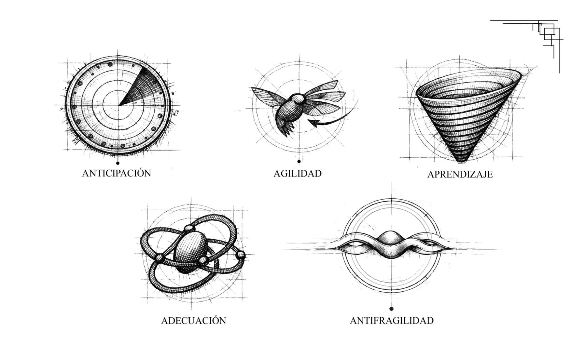
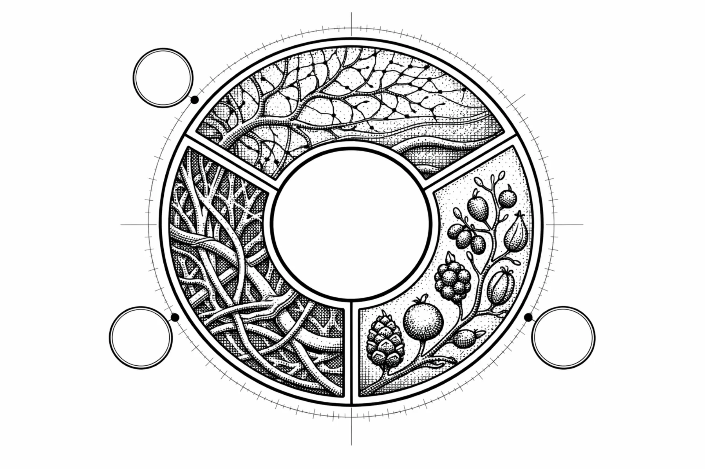
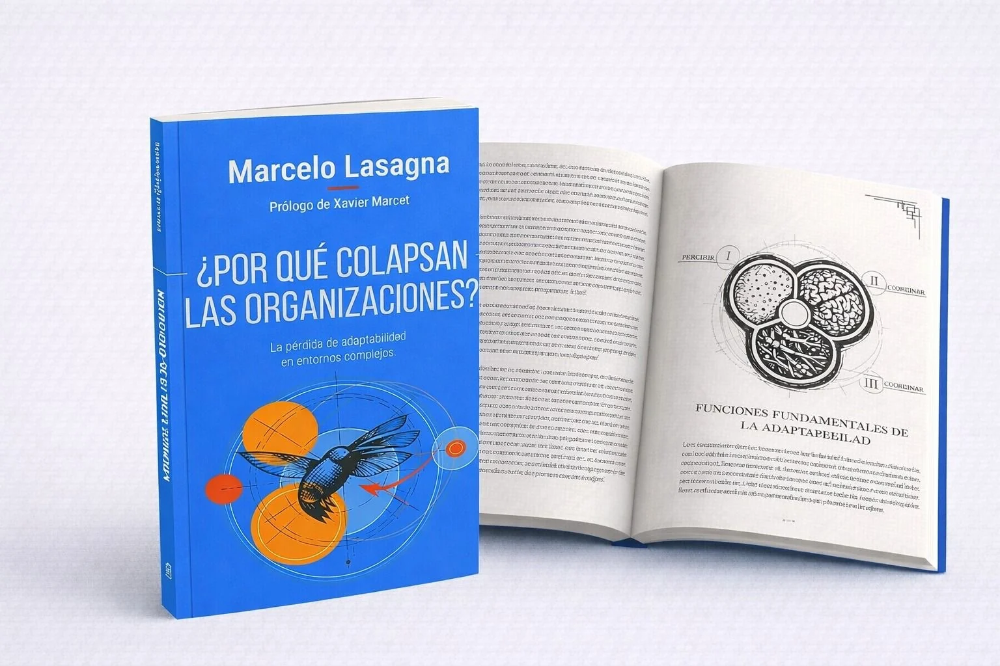

Muchas organizaciones no colapsan por falta de estrategia.
Colapsan porque su capacidad de respuesta llega después que el cambio.
Detectan demasiado tarde los cambios
Las señales ya están en el entorno, pero la organización todavía lee la realidad desde indicadores del ciclo anterior.
Aprenden demasiado lento
El conocimiento existe, pero no logra convertirse a tiempo en decisión, coordinación ni transformación efectiva.
Coordinan mal la complejidad
Áreas, equipos y liderazgos operan como piezas aisladas frente a problemas interdependientes.
Siguen diseñadas para un mundo que ya no existe
Su arquitectura mental, organizacional y cultural responde a una estabilidad que dejó de ser el punto de partida.
Las organizaciones no son máquinas.
Son sistemas vivos expuestos a incertidumbre, interdependencia y transformación permanente.
Controlar un sistema como si fuera estable.
La lógica mecánica busca previsibilidad, repetición y eficiencia local. En entornos complejos, esa misma estabilidad puede transformarse en fragilidad.
Cultivar capacidades para evolucionar.
El libro propone abandonar la lógica de estabilidad y comprender cómo cultivar capacidades adaptativas para sostener vigencia en entornos complejos.
Cinco formas de leer antes del quiebre.
Anticipación, agilidad, aprendizaje, adecuación y antifragilidad organizan el recorrido visual y conceptual del libro.

Anticipación
Leer señales débiles antes de que se vuelvan crisis.
Agilidad
Moverse con inteligencia, dirección y propósito.
Aprendizaje
Convertir conocimiento en ventaja evolutiva sostenible.

Adecuación
Alinear estructuras, procesos y cultura con el entorno real.
Antifragilidad
Fortalecerse en la presión y aprender del shock adaptativo.
Seis entradas para comprender el colapso antes de que sea evidente.
Complejidad, adaptabilidad e innovación tratadas como capacidades vivas, no como consignas de gestión.

Complejidad y colapso organizacional
Cómo se deteriora la capacidad de respuesta cuando el entorno cambia más rápido que la organización.
Adaptabilidad como ventaja competitiva
Por qué sostener vigencia requiere aprender, coordinar y transformar antes del quiebre.
El error de las organizaciones mecánicas
La estabilidad como supuesto de diseño frente a sistemas humanos vivos e interdependientes.
Inteligencia adaptativa
Capacidad para leer señales, decidir con incertidumbre y aprender institucionalmente.
Innovación en contextos inciertos
Innovar no como novedad, sino como respuesta estratégica ante entornos dinámicos.
Casos reales en Europa y América Latina
Experiencias y lecturas aplicadas a organizaciones públicas y privadas.
El libro es la punta visible de una conversación mayor.
Presentaciones
Conversaciones sobre complejidad, adaptabilidad y organizaciones.
Casa del Libro · 2 de julio · 19:00
Reservar plazaTest adaptativo
¿Tu organización está entrando en obsolescencia adaptativa?
Haz el test rápido y descubre tu nivel de riesgo.
Hacer testEncuentros para conversar sobre lo que ya cambió.
Casa del Libro
2 de julio · 19:00
Conversación sobre complejidad, adaptabilidad y organizaciones.
Aforo por confirmar.
Reservar plazaBarcelona
Fecha por confirmar
Encuentro con comunidad, organizaciones y medios especializados.
Recibir avisoSantiago
Fecha por confirmar
Presentación orientada a empresas, instituciones y equipos directivos.
Recibir avisoMarcelo Lasagna
PhD (c) en Ciencias Políticas.
Fundador de Protea Becoming Adaptive y cofundador de Lead To Change Chile.
Desde hace más de 30 años acompaña procesos de transformación e innovación en organizaciones públicas y privadas de Europa y América Latina.
Especialista en sistemas complejos adaptativos aplicados a organizaciones.
LinkedIn“La adaptabilidad no es una opción. Es la única ventaja sostenible.”
El libro ordena una hipótesis: las organizaciones pierden vigencia cuando se vuelven incapaces de aprender al ritmo del entorno.
Voces breves para reforzar autoridad.
Seleccionar tres citas del libro: empresarial, académica e institucional.
Cita breve por seleccionar del libro.
Batet
Cita breve por seleccionar del libro.
Jordi Marín
Cita breve por seleccionar del libro.
Oscar
El efecto Colibrí
Reflexiones sobre complejidad, adaptabilidad e innovación en tiempos inciertos.
Promover el libro, captar comunidad y abrir puertas a conferencias, labs e IAO.